Core · Video walkthrough
Build event workflows and verify every step
Configure credentials, separate event workflows and ordered steps, then inspect actual runs, conditions and automatic retries.
Before you begin
- Use the fictional Chicago Fire demonstration department with workflow, credential and run-view permissions.
- Use the isolated captured-mail service and demonstration credential; no real email, SMS or chat audience.
- Confirm background workflow processing and plan capacity are available.
- Use minimal fictional call metadata and keep workflows disabled until their destination and steps are checked.
Chapters
- Choose an event and outcome
- Create the matching credential
- Create the first workflow safely
- Add the first ordered action
- Add and check a condition
- Use separate workflows for separate events
- Enable and trigger a training event
- Inspect run and step details
- Monitor pending work and health
- Observe retries and finish practice
Watch the walkthrough
Step 1
Choose an event and outcome
Open Workflows in the Chicago Fire demonstration department. We will build a training call-created workflow with two ordered actions and a separate call-closed workflow. Begin with the outcome you want and the event that should cause it. Each workflow listens to one event. Multiple steps can respond to that event, while a different event needs a different workflow. Inspect the list's event and enabled columns before editing, and identify who will monitor the result when the automation runs.

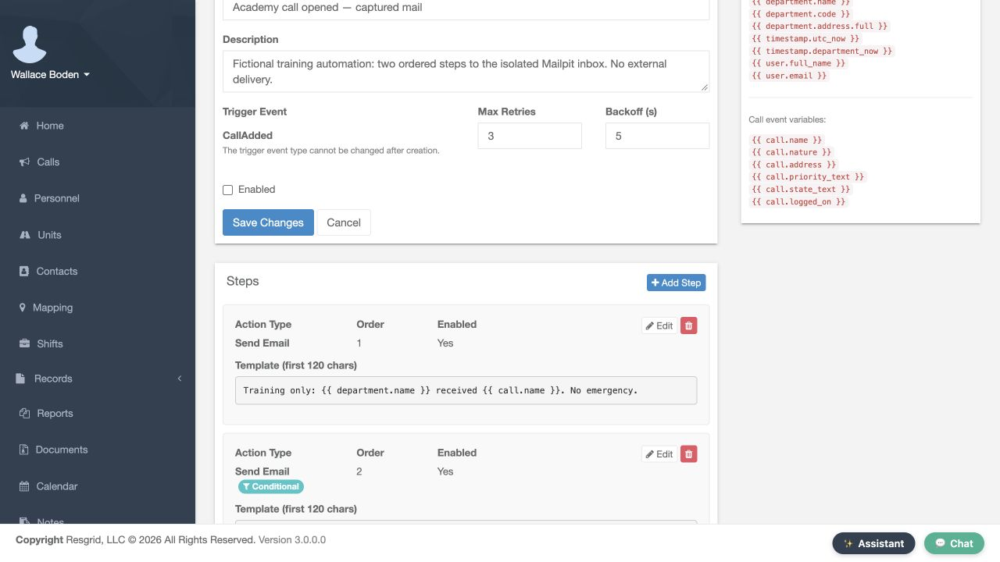
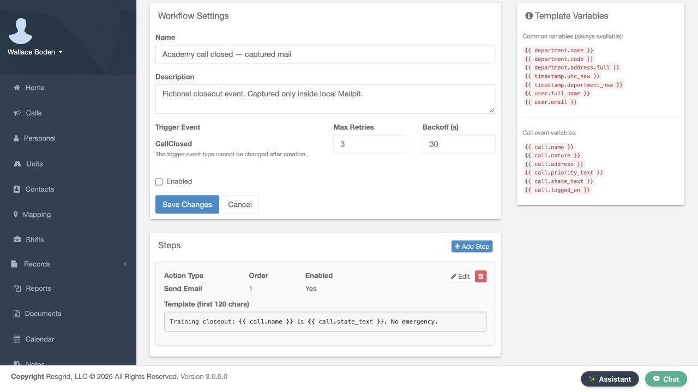
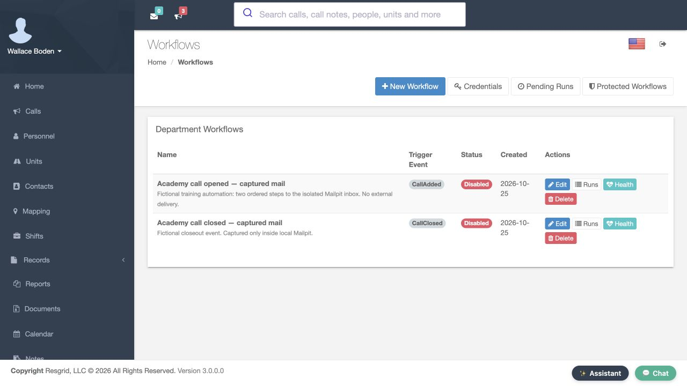
Practice
Name one event, its intended action and the person responsible for checking failures.
Step 2
Create the matching credential
Open Credentials and create Academy local captured mail. Choose SMTP Email. In this isolated exercise, Mailpit receives messages inside the training network; nothing goes to an outside mail service. Set the local host, port and demonstration sender, keep the unused password masked, and save. Your live department needs its own mail provider settings and appropriate transport security. The credential type must match the action. A stored credential supplies authentication details; it does not establish that a destination is reachable or accepts a message.
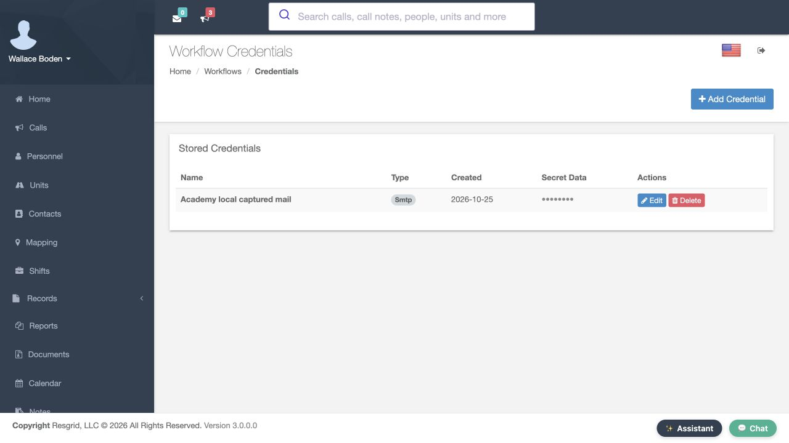
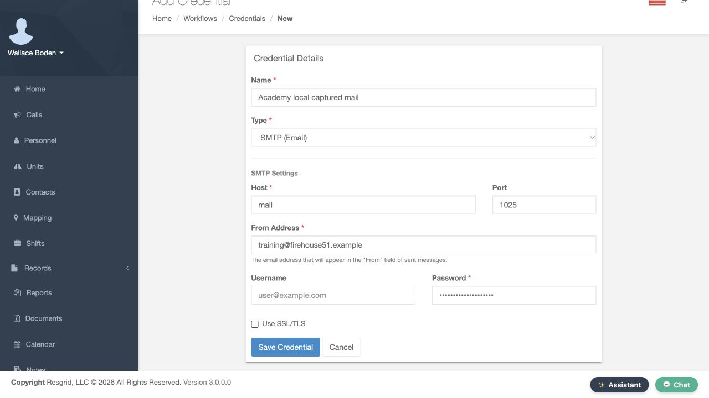
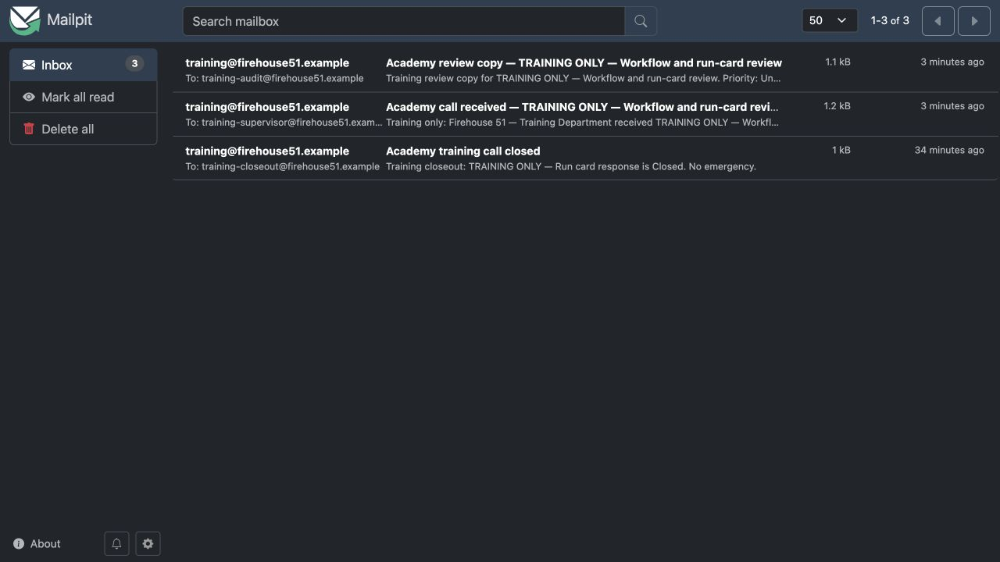
Practice
Create a disposable credential and confirm its type matches the planned action.
Step 3
Create the first workflow safely
Choose New Workflow and name it Academy call opened — captured mail. Select CallAdded as Trigger Event. Turn Enabled off while configuring the destination and actions, and review the retry controls. The event becomes fixed after creation, so confirm it before saving. Keep retry values modest for practice and observe actual attempt timing later. Template gallery examples also need their destinations and credentials completed before enabling. A descriptive name makes the event and operational purpose easier to recognize in the workflow list.
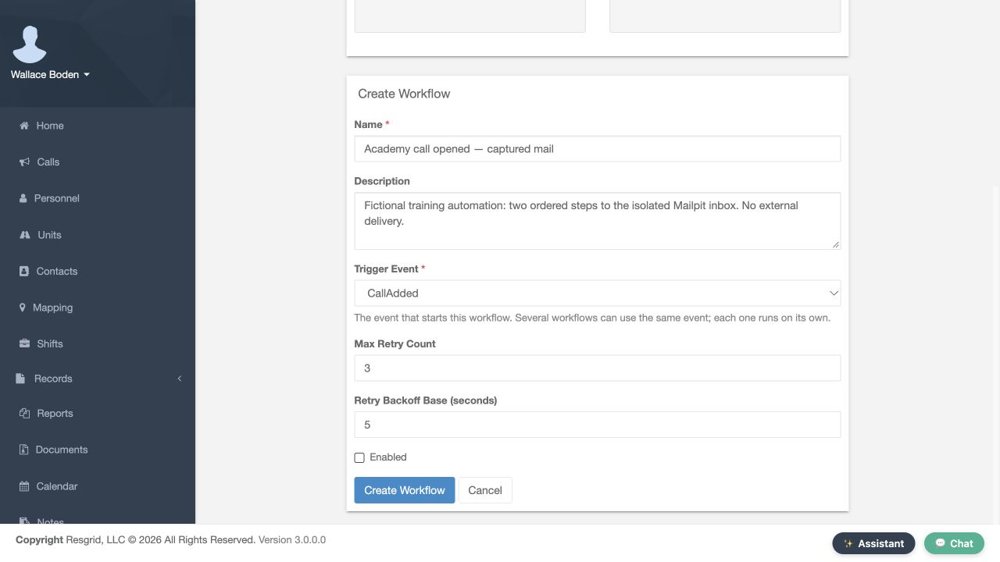
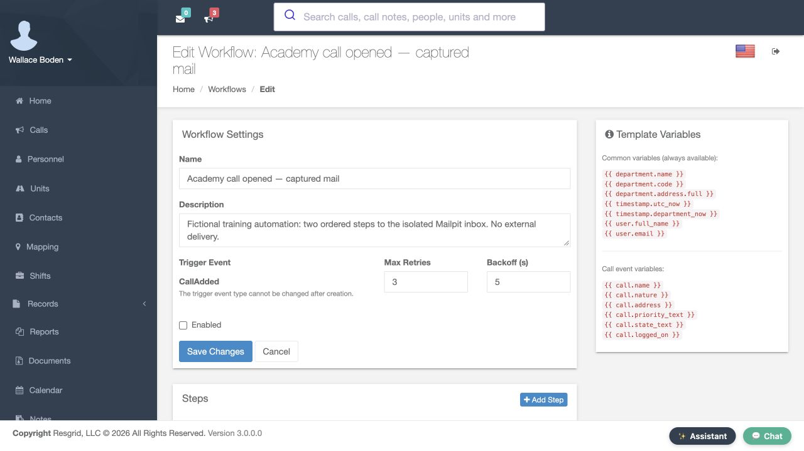
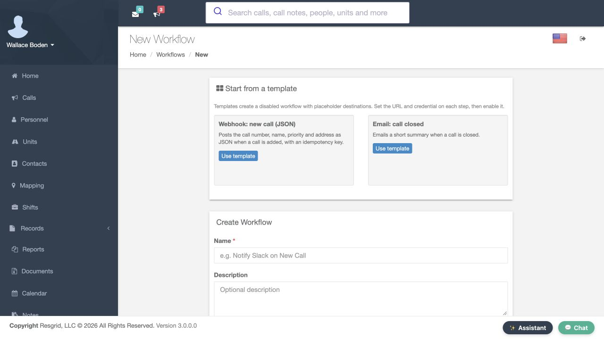
Practice
Create a disabled CallAdded workflow and confirm its event is the intended one.
Step 4
Add the first ordered action
Select Add Step. Choose Send Email and set Order to one. Enter the fictional training-supervisor address and a subject, then select Academy local captured mail as the SMTP credential. In Output Template, use a short training message with department name and call name from the variable reference. Keep unnecessary personal details and narratives out of the message. Save the step and inspect its card in the editor. The card shows the action and a template excerpt; the execution history will show whether a send actually completed.
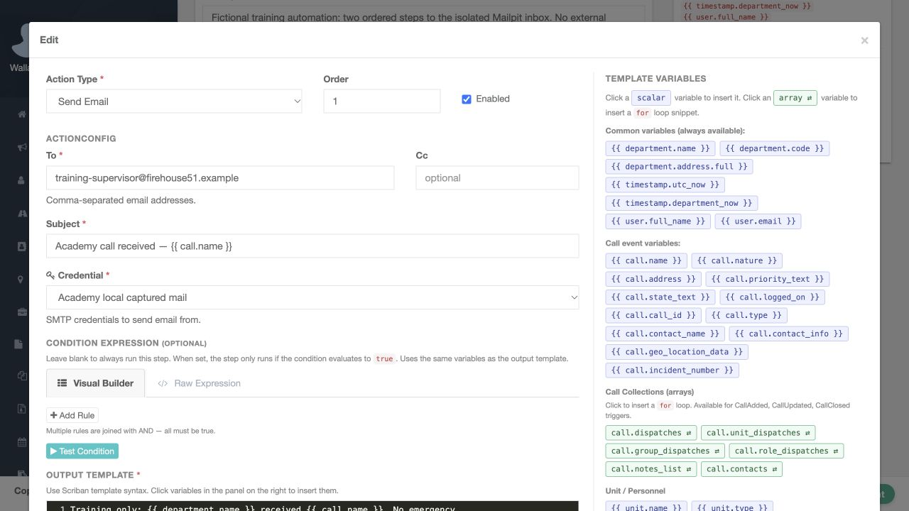
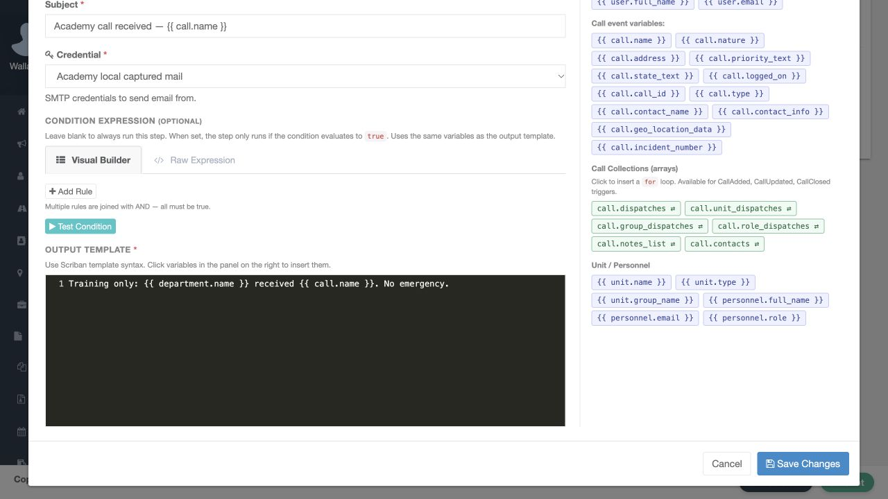
Practice
Save an order-one action whose destination and minimal output you can explain.
Step 5
Add and check a condition
Add a second Send Email step at Order two. For this exercise, run it only when the call name contains TRAINING. Use Visual Builder for simple comparisons, or Raw Expression with Scriban braces. Here, call.name piped to string.contains TRAINING must render true for the step to run. Select Test Condition and read the result carefully. A syntax-valid message means the expression can be read; without sample event data, it does not establish whether this call will pass. Save the condition with the step, then inspect the actual run later to confirm whether it ran or skipped.
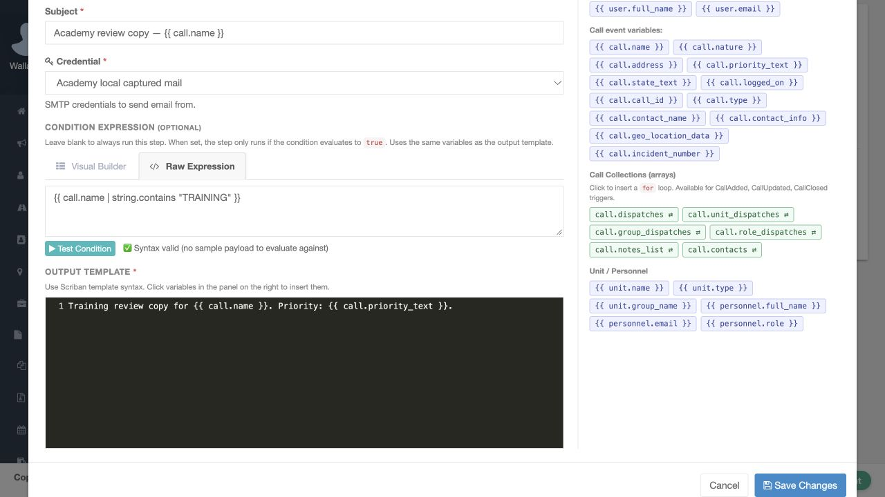
Practice
Save a simple conditional second step and distinguish syntax validation from event evaluation.
Step 6
Use separate workflows for separate events
Create Academy call closed — captured mail as a second workflow, choose CallClosed, and add its own closeout action. Keep it disabled until checked. This gives each event a visible definition and history. It does not make the first workflow wait for the second event. For other operations, choose the actual available event, such as a unit status change, completed checklist or finalized record. Check the event's timing and data before choosing template variables. Ordered steps belong to the event that started that specific run.
Practice
Create a second event workflow and explain why it is separate from the first.
Step 7
Enable and trigger a training event
Reopen Academy call opened — captured mail and review the destination, credential, enabled steps and order. Confirm the training receiver and background processing are ready. Enable the workflow and save. Create one approved training call whose name contains TRAINING. That operational event is the execution test. If the action is meant for email, a file store or a messaging platform, use a controlled test destination for that service. Do not infer a working integration merely from the workflow's enabled badge or the absence of a form error.
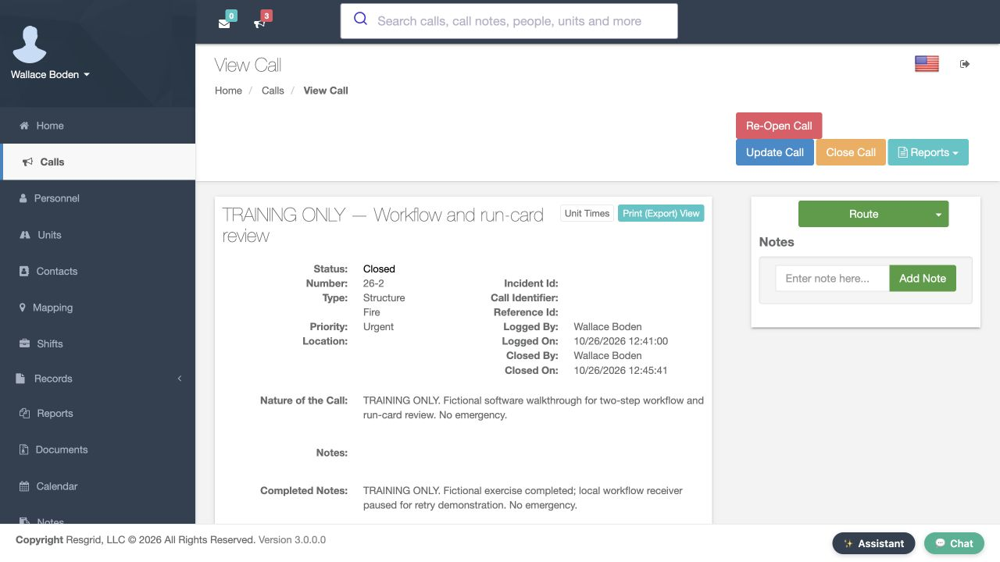
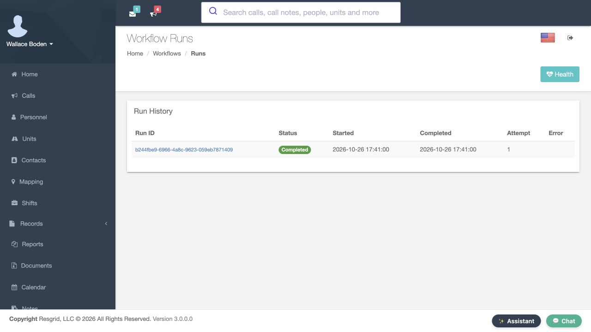
Practice
Trigger one isolated event and identify the corresponding run before repeating the exercise.
Step 8
Inspect run and step details
Open Runs for the workflow, then open the training run. Read its status, attempt number, start and completion times. Inspect each step's log and duration, including the conditional step. Expand Rendered Output when your permissions allow it and compare the actual message with the template. A skipped step should have an understandable reason; a failed step needs its recorded error reviewed. Compare the receiver's own controlled receipt when you need proof of delivery, because a workflow log alone may describe only the action's handoff.
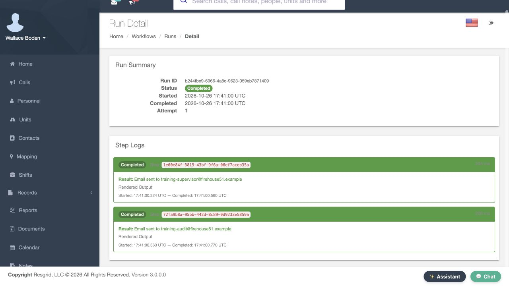
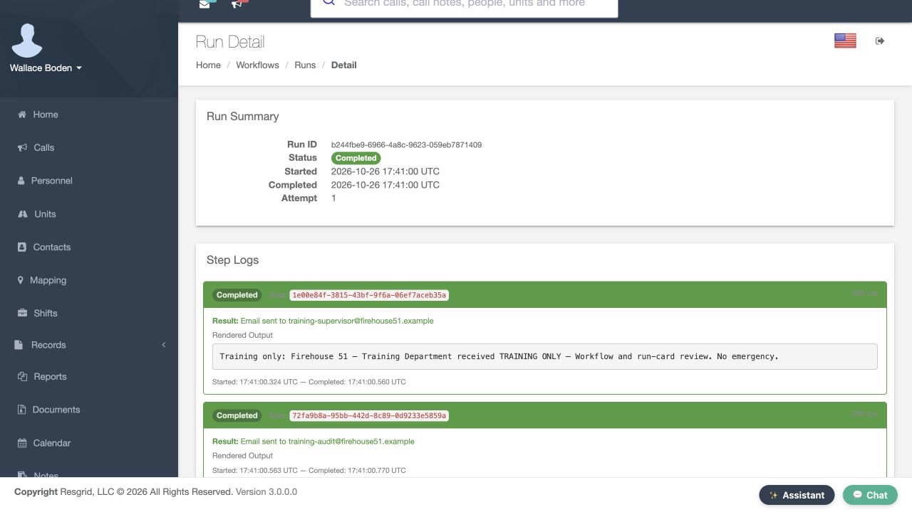
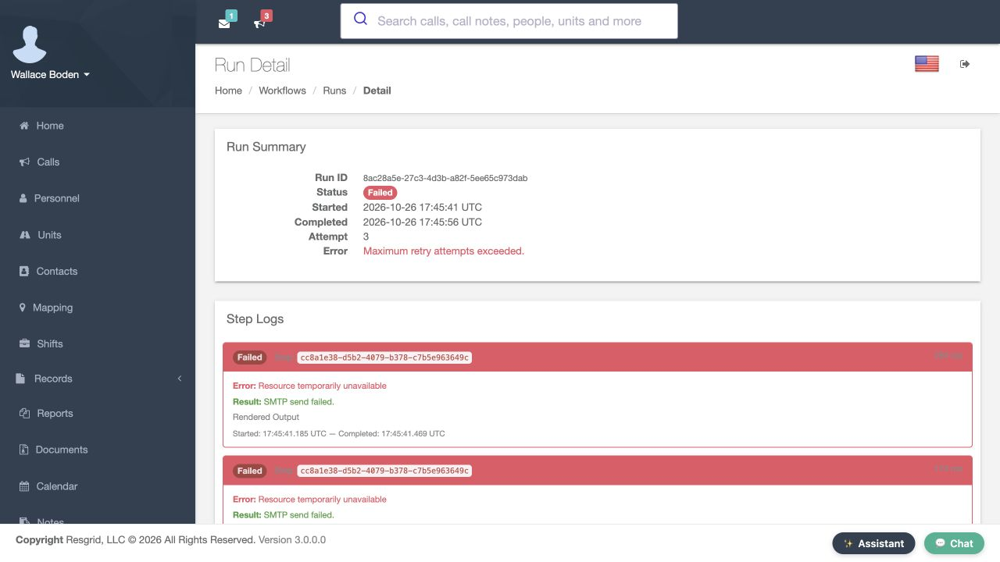
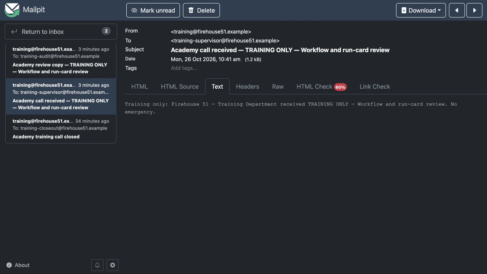
Practice
Match each enabled step to its real outcome and the event that caused the run.
Step 9
Monitor pending work and health
Open Health to review recent successful, failed and skipped runs and performance. Use the different time windows to see whether a single failure is part of a pattern. Pending Runs shows work that is waiting, running or retrying. Inspect a run before using Cancel, and understand what Clear Pending will affect. These controls manage queued work; they do not undo an action already accepted by another service. Keep the run identifier when investigating, so the workflow, event and destination evidence remain connected.
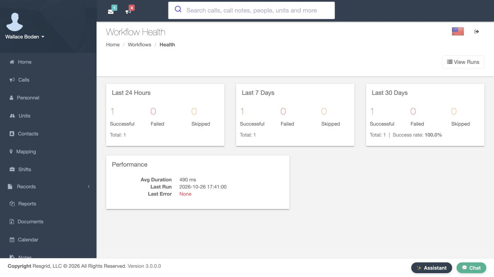
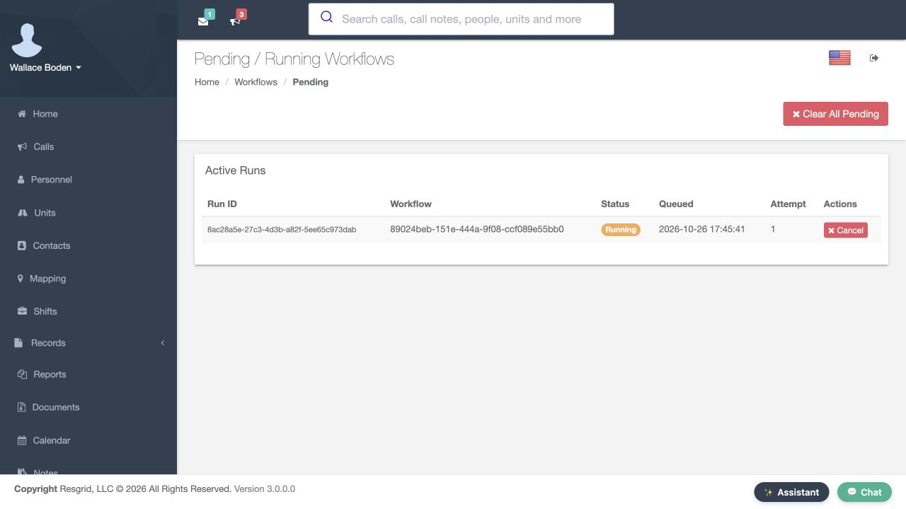
Practice
Find the training run in recent monitoring and identify the first evidence you would inspect after a failure.
Step 10
Observe retries and finish practice
For a controlled retry exercise, pause only the isolated training receiver and trigger a fresh close event. In this example the same run reaches three attempts, then fails with Maximum retry attempts exceeded. Read the SMTP error in its step logs. Restoring the receiver does not restart an exhausted run. A fresh training close event creates a different run, which completes on attempt one and arrives in the receiver. Retries happen automatically; this page does not provide a general Retry button. Earlier actions can run again, so destinations must tolerate duplicate attempts. In this build, the saved thirty-second backoff did not match the observed five- and ten-second gaps, so confirm timing in the run history. Finally, disable the training workflows and keep their run history. These controls also fit community care and mental health teams, search and rescue organizations, security departments, wildland contractors and industrial response teams. Choose the operational event and the minimum information your own process needs; for example, route a site incident to a supervisor or a completed readiness check to a training coordinator.
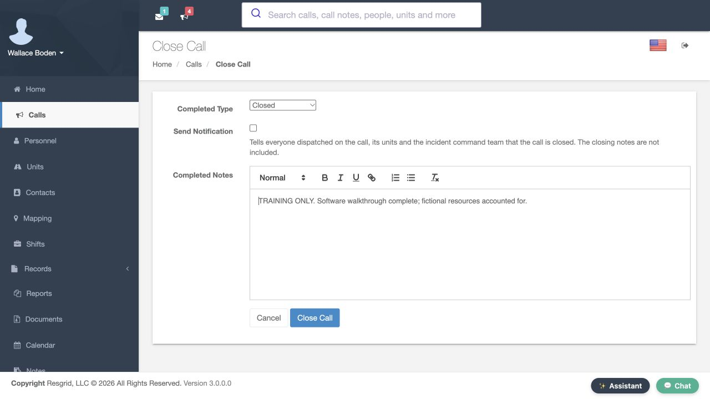
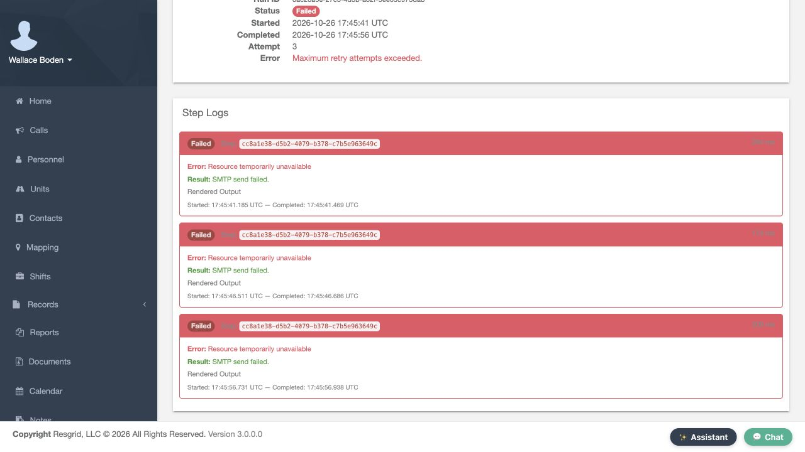
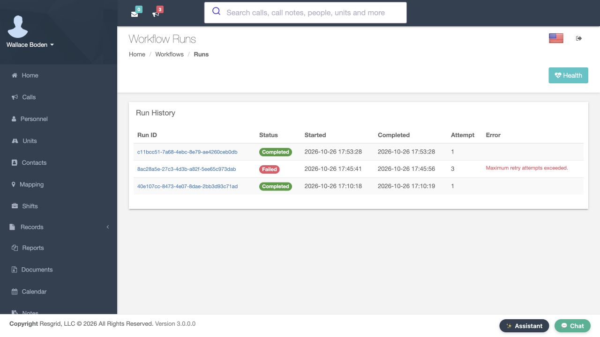
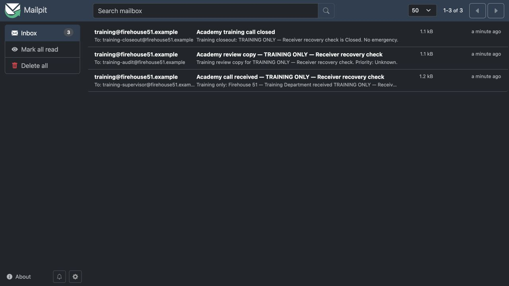
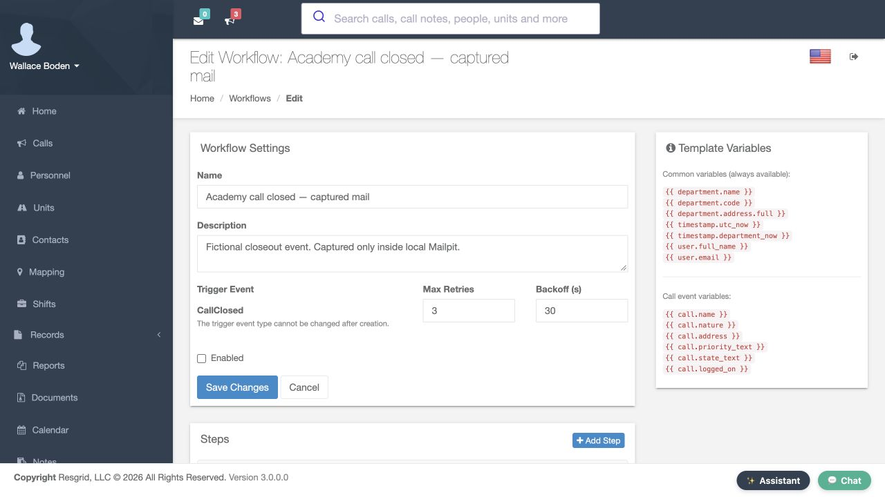
Practice
Explain duplicate-action risk, observe a real retry if available, and disable training definitions afterward.
Examples for your department
- Fire / EMS
- Chicago Fire training: separate CallAdded and CallClosed workflows post minimal fictional summaries to a local receiver.
- Community response
- Mobile crisis teams: automate approved operational metadata only; review protected-data access before adding clinical content.
- Search and rescue
- Search and rescue: use a checklist or status event to create a controlled readiness notification.
- Security
- Security: use distinct site-activity and incident-close events with the correct scoped destination.
- Wildland
- Wildland contractors: keep deployment, time-report and maintenance event definitions independently reviewable.
- Industrial
- Industrial response: test equipment or inspection notifications against a controlled integration receiver before activation.
Transcript
Download transcriptRead the complete transcript
Build event workflows and verify every step Audience: Department administrators and integration owners Choose an event and outcome Open Workflows in the Chicago Fire demonstration department. We will build a training call-created workflow with two ordered actions and a separate call-closed workflow. Begin with the outcome you want and the event that should cause it. Each workflow listens to one event. Multiple steps can respond to that event, while a different event needs a different workflow. Inspect the list's event and enabled columns before editing, and identify who will monitor the result when the automation runs. Practice: Name one event, its intended action and the person responsible for checking failures. Create the matching credential Open Credentials and create Academy local captured mail. Choose SMTP Email. In this isolated exercise, Mailpit receives messages inside the training network; nothing goes to an outside mail service. Set the local host, port and demonstration sender, keep the unused password masked, and save. Your live department needs its own mail provider settings and appropriate transport security. The credential type must match the action. A stored credential supplies authentication details; it does not establish that a destination is reachable or accepts a message. Practice: Create a disposable credential and confirm its type matches the planned action. Create the first workflow safely Choose New Workflow and name it Academy call opened — captured mail. Select CallAdded as Trigger Event. Turn Enabled off while configuring the destination and actions, and review the retry controls. The event becomes fixed after creation, so confirm it before saving. Keep retry values modest for practice and observe actual attempt timing later. Template gallery examples also need their destinations and credentials completed before enabling. A descriptive name makes the event and operational purpose easier to recognize in the workflow list. Practice: Create a disabled CallAdded workflow and confirm its event is the intended one. Add the first ordered action Select Add Step. Choose Send Email and set Order to one. Enter the fictional training-supervisor address and a subject, then select Academy local captured mail as the SMTP credential. In Output Template, use a short training message with department name and call name from the variable reference. Keep unnecessary personal details and narratives out of the message. Save the step and inspect its card in the editor. The card shows the action and a template excerpt; the execution history will show whether a send actually completed. Practice: Save an order-one action whose destination and minimal output you can explain. Add and check a condition Add a second Send Email step at Order two. For this exercise, run it only when the call name contains TRAINING. Use Visual Builder for simple comparisons, or Raw Expression with Scriban braces. Here, call.name piped to string.contains TRAINING must render true for the step to run. Select Test Condition and read the result carefully. A syntax-valid message means the expression can be read; without sample event data, it does not establish whether this call will pass. Save the condition with the step, then inspect the actual run later to confirm whether it ran or skipped. Practice: Save a simple conditional second step and distinguish syntax validation from event evaluation. Use separate workflows for separate events Create Academy call closed — captured mail as a second workflow, choose CallClosed, and add its own closeout action. Keep it disabled until checked. This gives each event a visible definition and history. It does not make the first workflow wait for the second event. For other operations, choose the actual available event, such as a unit status change, completed checklist or finalized record. Check the event's timing and data before choosing template variables. Ordered steps belong to the event that started that specific run. Practice: Create a second event workflow and explain why it is separate from the first. Enable and trigger a training event Reopen Academy call opened — captured mail and review the destination, credential, enabled steps and order. Confirm the training receiver and background processing are ready. Enable the workflow and save. Create one approved training call whose name contains TRAINING. That operational event is the execution test. If the action is meant for email, a file store or a messaging platform, use a controlled test destination for that service. Do not infer a working integration merely from the workflow's enabled badge or the absence of a form error. Practice: Trigger one isolated event and identify the corresponding run before repeating the exercise. Inspect run and step details Open Runs for the workflow, then open the training run. Read its status, attempt number, start and completion times. Inspect each step's log and duration, including the conditional step. Expand Rendered Output when your permissions allow it and compare the actual message with the template. A skipped step should have an understandable reason; a failed step needs its recorded error reviewed. Compare the receiver's own controlled receipt when you need proof of delivery, because a workflow log alone may describe only the action's handoff. Practice: Match each enabled step to its real outcome and the event that caused the run. Monitor pending work and health Open Health to review recent successful, failed and skipped runs and performance. Use the different time windows to see whether a single failure is part of a pattern. Pending Runs shows work that is waiting, running or retrying. Inspect a run before using Cancel, and understand what Clear Pending will affect. These controls manage queued work; they do not undo an action already accepted by another service. Keep the run identifier when investigating, so the workflow, event and destination evidence remain connected. Practice: Find the training run in recent monitoring and identify the first evidence you would inspect after a failure. Observe retries and finish practice For a controlled retry exercise, pause only the isolated training receiver and trigger a fresh close event. In this example the same run reaches three attempts, then fails with Maximum retry attempts exceeded. Read the SMTP error in its step logs. Restoring the receiver does not restart an exhausted run. A fresh training close event creates a different run, which completes on attempt one and arrives in the receiver. Retries happen automatically; this page does not provide a general Retry button. Earlier actions can run again, so destinations must tolerate duplicate attempts. In this build, the saved thirty-second backoff did not match the observed five- and ten-second gaps, so confirm timing in the run history. Finally, disable the training workflows and keep their run history. These controls also fit community care and mental health teams, search and rescue organizations, security departments, wildland contractors and industrial response teams. Choose the operational event and the minimum information your own process needs; for example, route a site incident to a supervisor or a completed readiness check to a training coordinator. Practice: Explain duplicate-action risk, observe a real retry if available, and disable training definitions afterward. Examples for your department Fire / EMS: Chicago Fire training: separate CallAdded and CallClosed workflows post minimal fictional summaries to a local receiver. Community response: Mobile crisis teams: automate approved operational metadata only; review protected-data access before adding clinical content. Search and rescue: Search and rescue: use a checklist or status event to create a controlled readiness notification. Security: Security: use distinct site-activity and incident-close events with the correct scoped destination. Wildland: Wildland contractors: keep deployment, time-report and maintenance event definitions independently reviewable. Industrial: Industrial response: test equipment or inspection notifications against a controlled integration receiver before activation.